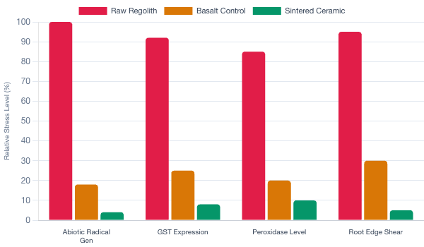
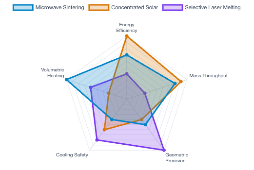
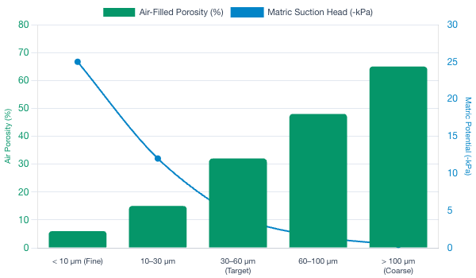
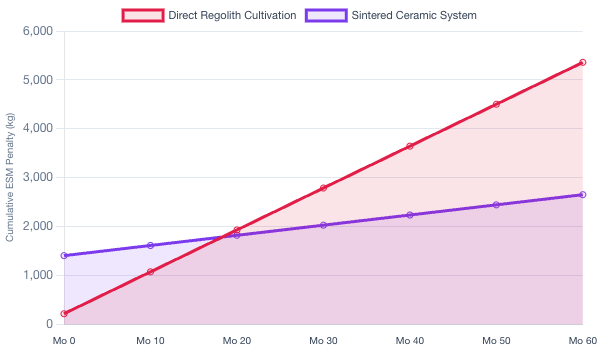
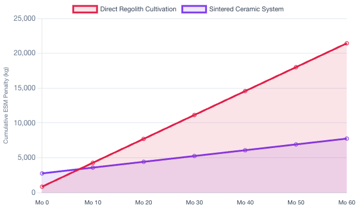
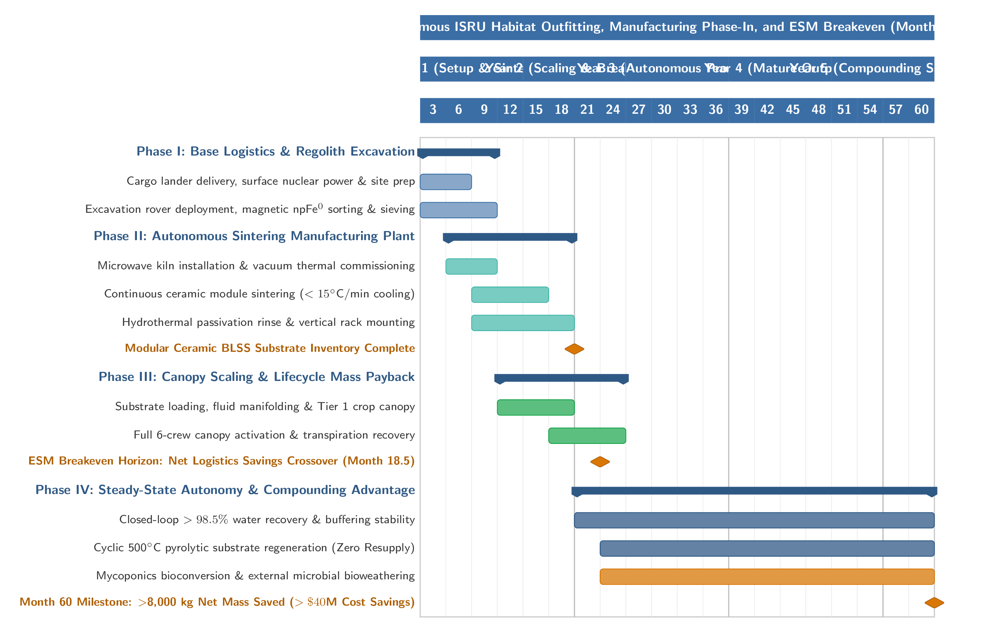
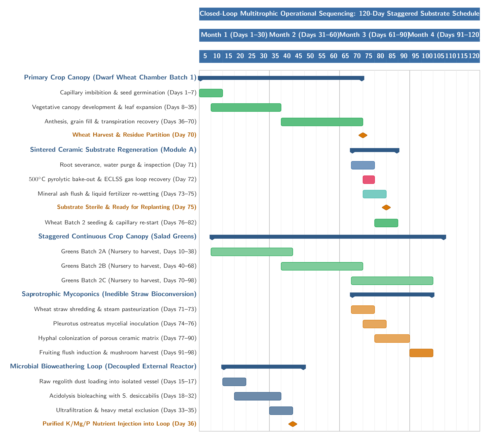
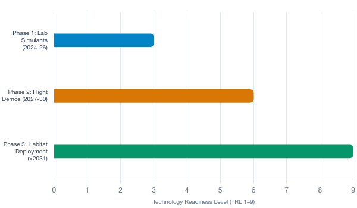
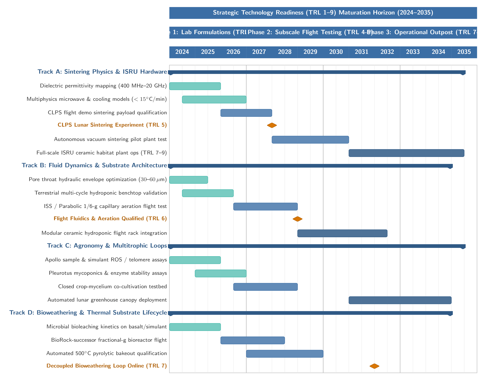

1. Introduction: The In-Situ Resource Utilization Imperative
Establishing an enduring human presence on the lunar surface requires transitioning from open-loop, resupply-dependent life support configurations to self-sustaining Biogenerative Life Support Systems (BLSS). Terrestrial resupply logistics impose an unsustainable launch mass burden for multi-year surface stays, where human metabolic requirements for water, oxygen, and nutrition scale linearly with crew size and mission duration. Bioregenerative architectures resolve this resupply vulnerability by harnessing photoautotrophic organisms to scrub atmospheric carbon dioxide, produce metabolic oxygen, purify wastewater via canopy transpiration, and supply fresh caloric and micronutrient biomass.
Historically, space mission architectures evaluated two distinct edaphic paradigms for extraterrestrial crop production: deploying synthetic hydroponic hardware transported from Earth, or cultivating crops directly in untreated, in-situ planetary regolith. Transporting inert hydroponic media (such as mineral rockwool, polyurethane foams, or expanded clay) and prefabricated polymeric fluid channels from Earth imposes launch mass penalties that severely limit the initial deployable agricultural canopy. Conversely, the direct edaphic use of raw lunar regolith relies on the assumption that lunar dust can serve as a functional analogue to terrestrial soil if augmented with liquid nutrients. However, pioneering botanical experiments utilizing returned Apollo specimens and high-fidelity planetary simulants demonstrate that raw lunar regolith imposes severe physiological penalties. Planetary-scale exposure to solar wind irradiation, cosmic rays, and hypervelocity micrometeorite comminution has generated a geochemically hostile matrix defined by reactive submicroscopic metallic iron, unweathered razor-sharp mineral shards, and volatile abiotic surface chemistry.
To circumvent both the launch-mass penalty of imported hardware and the biological toxicity of raw regolith, life support engineering is shifting toward an in-situ bio-infrastructure paradigm. Rather than attempting to adapt crop physiology to an inherently hostile mineral substrate, In-Situ Resource Utilization (ISRU) thermal consolidation processes can transform unrefined regolith into engineered porous ceramics. Controlled high-temperature sintering passivates reactive geochemical interfaces, rounds abrasive grain morphology, and enables the precision fabrication of hydroponic troughs, multiphase fluid-delivery wicks, and mycoponic scaffolds.
2. Physicochemical & Toxicological Interfaces of Pristine Lunar Regolith
The Moon's hyper-vacuum environment and lack of a dipolar magnetosphere expose surface minerals to unattenuated space weathering. Energetic solar wind protons reduce ferrous iron silicates, while ubiquitous micrometeorite impacts induce localized shock melting and vapor-phase condensation. These energetic phenomena generate nanophase metallic iron ($\mathrm{npFe}^0$), consisting of submicroscopic zero-valent iron droplets ($1\text{--}100\,\mathrm{nm}$ in diameter) embedded within the rims of mineral grains and dispersed through the amorphous silicate matrix of agglutinitic glasses.
When pristine lunar regolith or experimentally reduced simulants contact oxygenated aqueous solutions inside a habitat atmosphere, these surface-accessible metallic blebs trigger destructive abiotic oxidation cascades. Solvated divalent iron ions ($\mathrm{Fe}^{2+}$) dissolve from mineral boundaries, initiating modified Fenton-like catalytic cycles:
Electron paramagnetic resonance (EPR) spectroscopy alongside terephthalate hydroxylation assays confirms that reduced lunar dusts generate hydroxyl radical concentrations 5-fold to 100-fold greater than terrestrial basaltic analogs. Furthermore, mechanical crushing leaves abundant surface dangling bonds such as broken silicate radicals ($\equiv\!\mathrm{Si}\cdot$ and $\equiv\!\mathrm{Si}-\mathrm{O}\cdot$). When hydrated, these radicals homolytically split water molecules, generating sustained bursts of oxidizing species that trigger rapid lipid peroxidation in plant root cell membranes.

| Parameter / Property | Raw Lunar Regolith (Direct Cultivation) | Sintered Regolith Ceramic (Engineered Substrate) |
|---|---|---|
| Nanophase Metallic Iron ($\mathrm{npFe}^0$) | Surface-accessible blebs across grain rims ($1\text{--}100\,\mathrm{nm}$) | Oxidized and incorporated into stable crystalline silicates |
| Aqueous ROS Generation Potential | High; sustained $\cdot\mathrm{OH}$ and $\mathrm{O}_2^{\cdot-}$ generation via Fenton pathways | Negligible; passivated, hydrothermally inert interface |
| Grain / Pore Morphometry | Highly angular, sharp, micro-shearing shards | Rounded, smooth, consolidated neck boundaries |
| Plant Transcriptomic Profile | Chronic upregulation of GSTs, peroxidases, JA, and ABA stress pathways | Homeostatic baseline; standard vegetative allocation |
| Chromosomal & Telomeric Integrity | Elevated 8-oxoG lesions, accelerated telomere shortening | Protected genome; absence of mineral-derived radical stress |
| Aqueous Solution Chemistry | Uncontrolled dissolution; alkaline spikes ($\mathrm{pH}\;9.0\text{--}11.0$), P-fixation | Stable $\mathrm{pH}$ control ($\mathrm{pH}\;5.8\text{--}6.2$); predictable stoichiometry |
3. Materials Science & In-Situ Manufacturing Modalities
Thermal sintering between $1050^\circ\mathrm{C}$ and $1250^\circ\mathrm{C}$ transforms loose, biologically hazardous regolith into inert, structurally coherent ceramic substrates. Viscous flow of agglutinitic impact glasses and pyroxenes wets refractory minerals such as anorthite plagioclase, creating consolidated neck boundaries. Metallic $\mathrm{npFe}^0$ oxidizes and solid-solubilizes into thermodynamically stable clinopyroxenes (augite, $(\mathrm{Ca, Mg, Fe})\mathrm{SiO}_3$) and olivines ($(\mathrm{Mg, Fe})_2\mathrm{SiO}_4$), eliminating electron transfer in aqueous solution. Concurrently, atomic mass transfer rounds sharp edges, quenching reactive dangling bonds.
Microwave sintering at $2.45\,\mathrm{GHz}$ and $5.8\,\mathrm{GHz}$ provides volumetric dielectric heating. The absorbed power per unit volume ($P_v$) is described by:
where $f$ is frequency, $\varepsilon_0$ is free space permittivity, $\varepsilon''$ is relative dielectric loss factor, and $E$ is electric field strength. The high dielectric loss tangent ($\tan\delta = \varepsilon''/\varepsilon'$) driven by $\mathrm{npFe}^0$ and ilmenite allows pristine regolith to heat rapidly from within. To prevent thermal-shock microcracking, cooling rates must be maintained strictly below $15^\circ\mathrm{C/min}$.

| Modality | Heating Mechanism | Operating Temp. | Specific Energy | Resolution | Primary Application |
|---|---|---|---|---|---|
| Microwave Sintering | Volumetric dielectric coupling | $1050^\circ\mathrm{C}\text{--}1200^\circ\mathrm{C}$ | $\sim 1.2\,\mathrm{kWh/kg}$ | $1\text{--}5\,\mathrm{mm}$ | Volumetric growth substrates, filter blocks, pavers |
| Concentrated Solar (ALM) | Focused solar irradiance ($1361\,\mathrm{W/m}^2$) | $1100^\circ\mathrm{C}\text{--}>1400^\circ\mathrm{C}$ | $0\,\mathrm{kWh}$ Electrical | $2\text{--}10\,\mathrm{mm}$ | Large hydroponic troughs, drainage gutters, bulk shielding |
| Selective Laser Melting (SLM) | Focused optical laser diode ($\lambda=1064\,\mathrm{nm}$) | $1200^\circ\mathrm{C}\text{--}1500^\circ\mathrm{C}$ | $\sim 3.5\,\mathrm{kWh/kg}$ | $50\text{--}200\,\mu\mathrm{m}$ | Precision aeration nozzles, wicking pins, fluid manifolds |
4. Multiphase Fluid Dynamics & Aeration in Lunar Gravity
On the lunar surface, gravitational acceleration drops to $g_L \approx 1.62\,\mathrm{m/s}^2$ ($1/6\,g$). This fundamentally lowers the dimensionless Bond number ($\mathrm{Bo}$):
where $\Delta\rho$ is density difference, $d$ is pore diameter, and $\gamma$ is surface tension. Consequently, capillary retention forces dominate over gravitational drainage. The equilibrium capillary rise height ($h_c$) increases six-fold:
In unsorted raw regolith, capillary suction traps water in fine micropores, creating an expansive saturated layer that blocks oxygen diffusion and suffocates roots. Sintering classified particle fractions ($45\text{--}75\,\mu\mathrm{m}$) creates monodisperse pore throat diameters ($30\text{--}60\,\mu\mathrm{m}$). Governed by the van Genuchten equation:
this pore window stabilizes matric potential between $-2.5$ and $-5.0\,\mathrm{kPa}$, supporting continuous capillary wicking while maintaining air-filled porosity above $25\text{--}30\%$ at field capacity.

5. Equivalent System Mass (ESM) & Lifecycle Economics
NASA's Equivalent System Mass ($\mathrm{ESM}$) converts hardware mass ($M$), pressurized volume ($V$), power ($P$), cooling ($C$), and crew labor ($T$) into a standardized mass metric:
Direct regolith cultivation has a low initial launch mass ($\sim 420\,\mathrm{kg}$) but suffers severe recurring penalties from capillary water entrapment ($<80\%$ recovery efficiency), alkaline dissolution requiring $145\,\mathrm{kg/year}$ of acid buffers, and high crew dust mitigation labor. Sintered bio-infrastructure requires an automated manufacturing plant ($\sim 1850\,\mathrm{kg}$) but achieves $>98.5\%$ water recovery, stable $\mathrm{pH}$ ($5.8\text{--}6.2$), and negligible dust risks. Systems-level modeling confirms an operational breakeven horizon between $18$ and $22$ months (and $9\text{--}15$ months with surface nuclear power).



6. Closed-Loop Multitrophic Ecosystems
Crops such as dwarf wheat, potato, and soybean produce $40\text{--}60\%$ inedible lignocellulosic residue. Integrating saprotrophic fungi (\textit{Pleurotus ostreatus}, \textit{Ganoderma lucidum}) on perforated ceramic plates upcycles this residue into edible protein and $\mathrm{CO}_2$. Essential fertilizer minerals ($\mathrm{K}^+, \mathrm{Ca}^{2+}, \mathrm{Mg}^{2+}$) are replenished via microbial bioleaching in sealed external bioreactors using \textit{Sphingomonas desiccabilis} (demonstrated by ESA BioRock). Substrate biofouling is resolved through cyclic $500^\circ\mathrm{C}$ pyrolytic bake-outs:
The ceramic matrix emerges sterile and decarbonized for infinite re-use without structural degradation.

7. Technology Readiness Level (TRL) Maturation Roadmap
A structured three-phase development roadmap advances sintered regolith bio-infrastructure from laboratory proof-of-concept to operational lunar surface deployment:
- Phase 1: Laboratory Formulations (2024--2026, TRL 1 $\to$ 3): Simulant dielectric characterization, multiphysics modeling, and plant transcriptomic stress elimination.
- Phase 2: Subscale Flight Testing (2027--2030, TRL 4 $\to$ 6): Autonomous sintering payloads on CLPS landers, ISS capillary wicking validation, and microgravity bioleaching.
- Phase 3: Operational Deployment (>2031, TRL 7 $\to$ 9): Deployment of full-scale ISRU manufacturing plants constructing vertical hydroponic arrays integrated with habitat ECLSS.


8. Conclusions & Declarations
Transforming unrefined lunar regolith into engineered sintered ceramics provides an in-situ manufacturing pathway that resolves the fundamental toxicological, mechanical, and fluid-dynamic barriers of direct regolith agriculture. By passivating reactive metallic iron, rounding sharp grain edges, and stabilizing pore throats to $30\text{--}60\,\mu\mathrm{m}$, sintered bio-infrastructure ensures aerobic root respiration and $>98.5\%$ water recovery under $1/6\,g$. Coupled with fungal mycoponics, microbial bioweathering, and cyclic pyrolytic regeneration, sintered ceramics establish a durable, closed-loop foundation for sustained biological life support on the Moon.
Declarations
Acknowledgements: Supported by the In-Situ Resource Utilization (ISRU) and Space Life Support engineering research initiatives.
Author Contributions: F.A., S.A., C.T., and L.A. contributed to literature synthesis, modeling, manuscript writing, and review.
Competing Interests: The authors declare no competing interests.
Data & Code Availability: Complete LaTeX sources, ESM Python models, and simulation outputs are openly available in the GitHub repository at github.com/dr-richard-barker/lunar-regolith-blss-review and archived under DOI: 10.5281/zenodo.placeholder.
References
- Wheeler, R. M. Agriculture for space: people and places paving the way. Open Agric. 2, 14--32 (2017).
- Paul, A.-L., Elardo, S. M. & Ferl, R. Plants grown in Apollo lunar regolith present stress-associated transcriptomes that inform prospects for lunar exploration. Commun. Biol. 5, 382 (2022).
- Ming, D. W. & Henninger, D. L. Lunar Base Agriculture: Soils for Plant Growth (American Society of Agronomy, 1989).
- Hanford, A. J. Advanced Life Support Baseline Values and Assumptions Document. NASA/CR-2004-208941 (NASA JSC, 2004).
- Wheeler, R. M. Space farming contributions to agriculture on Earth and in space. NASA/TM-20230018203 (2023).
- Wamelink, G. W. W. et al. Crop growth and viability of seeds on Mars and Moon soil simulants. Open Agric. 4, 509--516 (2019).
- Atkin, J., Oliveira Santos, S. et al. Bioremediation of lunar regolith simulant through mycorrhizal fungi and plant symbioses enables chickpea to seed. Sci. Rep. 14, 8421 (2024).
- Hendrix, D. A., Legett, C. IV & Hurowitz, J. A. The reactivity of experimentally reduced lunar regolith simulants. Meteorit. Planet. Sci. 59, 2341--2358 (2024).
- Turci, F. et al. Mechanistic insight into the oxidative potential of lunar dust analogues. Astrobiology 15, 735--745 (2015).
- Taylor, L. A. & Meek, T. T. Microwave processing of lunar soil: properties, theory, and practice. J. Aerosp. Eng. 18, 188--196 (2005).
- Fateri, M. et al. Solar sintering for lunar additive manufacturing. J. Aerosp. Eng. 32, 04019084 (2019).
- Xi, Y., Zhang, Y. et al. Multiphysics computational model of microwave sintering of lunar regolith simulant. Coatings 16, 222 (2026).
- Goulas, A. & Binner, J. G. P. Process parameters development of selective laser melting of lunar regolith. Addit. Manuf. 18, 88--95 (2017).
- Heinse, R., Jones, S. B., Or, D. et al. Porous media water retention in microgravity: The ISS ORZS experiment. Vadose Zone J. 6, 713--722 (2007).
- Barbero Barcenilla, B. & Shippen, D. E. Back to the future: The intimate connection between telomere factors and stress. J. Biol. Chem. 294, 14803 (2019).
- Bilardo, V. J. et al. Equivalent system mass (ESM) metric modeling for surface planetary habitats. AIAA SciTech 2024-1142 (2024).
- Cockell, C. S. et al. Microbially-enhanced element recovery from basalt on the International Space Station. Nat. Commun. 11, 5523 (2020).
(Complete 59-entry bibliography available in `manuscript/references.bib` and in compiled PDF)